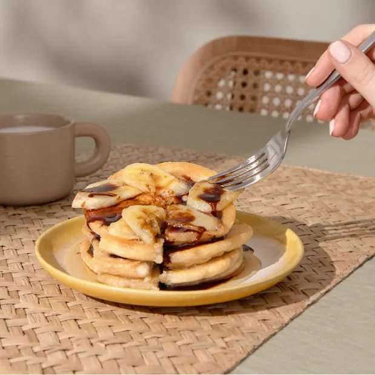

Home
Protein Pancake

Description
Un pancake simple dope aux proteines pour les sportifs, mais en ne faisant pas l'impasse sur le gout
Ingredients
- 40gr de farine de flocons d'avoine
- 1/2 c.c de cannelle
- 15gr de proteines en poudre
-
- 1 c.c d'etythritol
- 2 oeufs
- 1 c.c de skyr
- un peu de lait
- 15gr de noix
Etapes de Preparation
- Melangez dans un saladier tous les ingredients secs: farine d'avoine, canelle, proteine, erythritol
- Ajouter dans la preparation le Skyr, les oeufs et un peu de lait
- Ajouter a convenance un peu de noix et de cacao
- Faites cuire le tout dans une crepiere 2 min de chaque cote